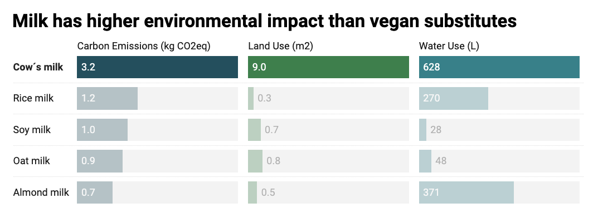
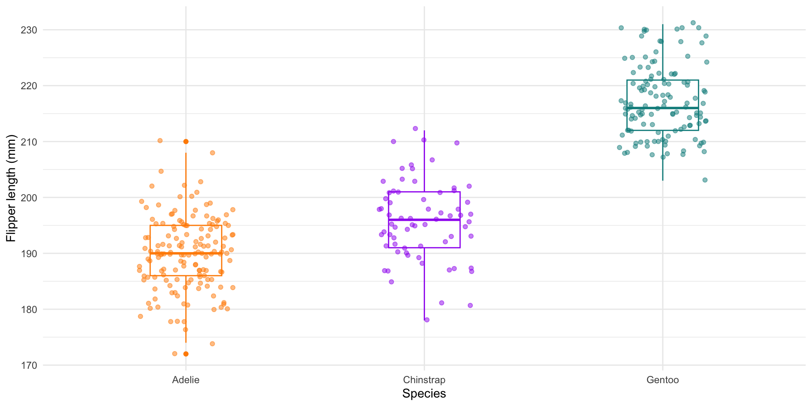

WebAIM defines alternative text, aka alt text, as:
…a textual substitute for non-text content in web pages.
In other words, alt text is a written description that conveys the meaning / messaging of visual elements (e.g. photos / images, media, data visualizations).
Alt text serves many different communities and functions
Just a few examples:
Alt text is read aloud by assistive technologies, like screen readers, helping users with visual or certain cognitive disabilities to perceive the content and function of visual elements on web pages
Alt text will appear in place of visual elements for those who are using a slow internet connection, or who have limited or expensive bandwidth
Alt text may serve those with “situational limitations,” such as viewing a computer screen in bright sunlight
Alt text provides more accurate image descriptions / context to search engine crawlers, which improves their assessment of a page’s purpose and content
Because of this, it’s important that we include good alt text with any data visualizations we publish online!
A formula for writing alt text
Data viz designer and instructor, Amy Cesal, suggests this rule of thumb for writing alt text for data visualizations: alt=“Chart type of type of data where reason for including chart.
alt=“Colored stripes of chronologically ordered temperatures where they increase in red to show the warming global temperature”
Another example

alt=“A split bars chart of different types of milk’s (dairy and plant-based) environmental impact, where cow’s milk scores significantly worst in carbon emissions, land use, and water use than the other milk alternatives. Cow’s milk produces two times more carbon emissions, uses nine times more land, and twice the water that rice milk uses. Rice milk is the second most contaminating type of milk in terms of carbon emissions.”
Another example

alt=“A boxplot of penguin flipper lengths where Gentoo penguins have flipper lengths that are about 12% larger than Adelie or Chinstrap penguins.”
Include both a figure caption & alt text
A figure caption is text that is displayed on the screen (typically beneath the data visualization it’s associated with) and is used to provide additional information and context.
Alt text is not rendered on screen, but is identified and read aloud by screen readers. It’s used to describe the main takeaway(s) of a data visualization.
Figure caption: “Warming Stripes”, by Ed Hawkins, depicts the average annual global temperature from 1850-2022. Data Source: HadCRUT5. To learn more about this visualization, visit showyourstripes.info.
Alt text: Colored stripes of chronologically ordered temperatures where they increase in red to show the warming global temperature
Additional tips for writing alt text for data visualizations
In addition to the formula presented on the last couple slides, consider the following tips:
write in sentence case, but keep it short (alt text is read linearly by screen readers, which means that people can’t go back a word if they missed something)
carefully consider the use of special characters (this article details “safe” vs. “unread” characters)
link to the data or source (not in your alt text, but somewhere in the surrounding text or figure caption)
Adding alt text
Include alt text with your data visualizations, no matter how you choose to embed them:
If you’re rendering ggplot (or other data visualization) code within a .qmd file, add the fig-alt code chunk option:
```{r}#| eval: true#| echo: false#| fig-cap: "Figure caption text goes here"#| fig-alt: "Alt text goes here"ggplot(...) + geom_*()```
If you’ve save your data visualization as an image file, you can embed it in a .qmd file using either markdown or html syntax:
Markdown
{fig-alt="Alt text goes here"}
HTML
<img src="file/path/to/image" alt="Alt text goes here">
Adding alt text (ggplot example)
```{r}#| eval: true#| echo: true#| fig-cap: "Boxplot of penguin flipper lengths"#| fig-alt: "A boxplot of penguin flipper lengths where Gentoo penguins have flipper lengths that are about 12% larger than Adelie or Chinstrap penguins."library(tidyverse)library(palmerpenguins)ggplot(data = penguins, aes(x = species, y = flipper_length_mm)) +geom_boxplot(aes(color = species), width =0.3, show.legend =FALSE) +geom_jitter(aes(color = species), alpha =0.5, show.legend =FALSE, position =position_jitter(width =0.2, seed =0)) +scale_color_manual(values =c("darkorange","purple","cyan4")) +labs(x ="Species",y ="Flipper length (mm)") +theme_minimal()```
Boxplot of penguin flipper lengths
Check to make sure your alt text was applied
(In Chrome) Right click on an image > Inspect to look at the underlying HTML of a webpage. You should see alt="Your alt text.". For example, right clicking on the image on slide 4 should reveal something that looks like this: